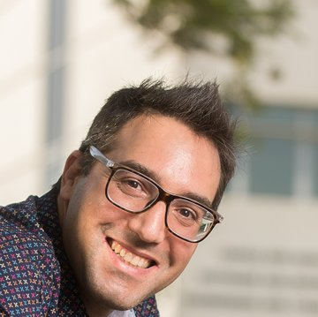
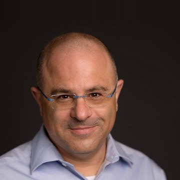
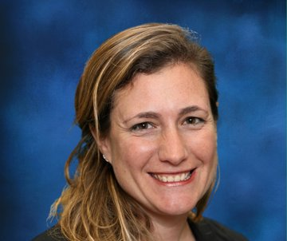
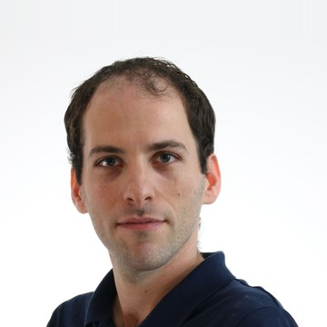
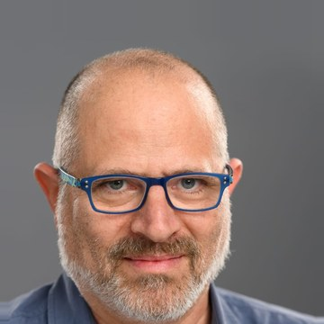
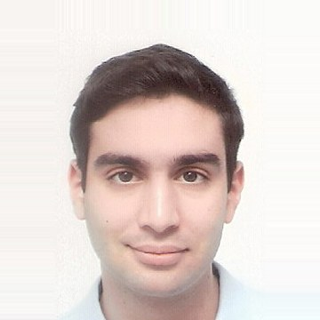
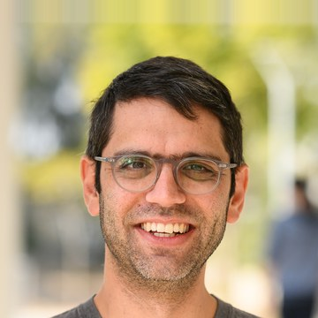
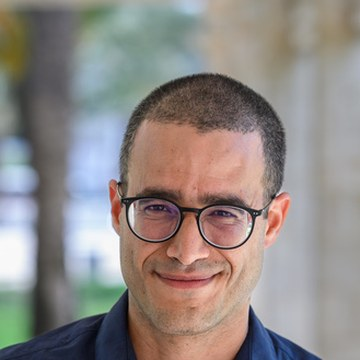
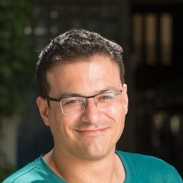
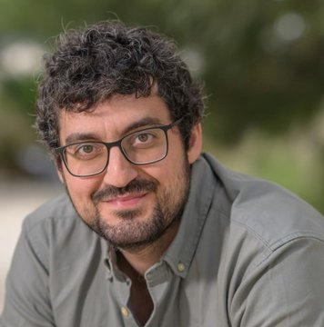

Members

Dr. Oren Tsur, Chair
Department of Software and Information Systems Engineering

Prof. Sharon Pardo, Deputy Chair
Department of Politics and Government

Dr. Hila Zahavi
Department of Politics and Government
Prof. Jennifer Oser
Department of Politics and Government

Dr. Yuval Pinter
Computer Science
Dr. Ilan Manor
Communication Studies

Prof. Gilad Ravid
Industrial Engineering and Management
Dr. Dan Vilenchik
Electrical and Computer Engineering
Dr. Michael Fire
Software and Information Systems Engineering

Dr. Elior Sulem
Software and Information Systems Engineering

Dr. Nir Grinberg
Software and Information Systems Engineering

Dr. Yossi David
Communication Studies

Dr. David Lagziel
Economics Department
Dr. Niv Regev
Psychology

Dr. Almog Simchon
Psychology